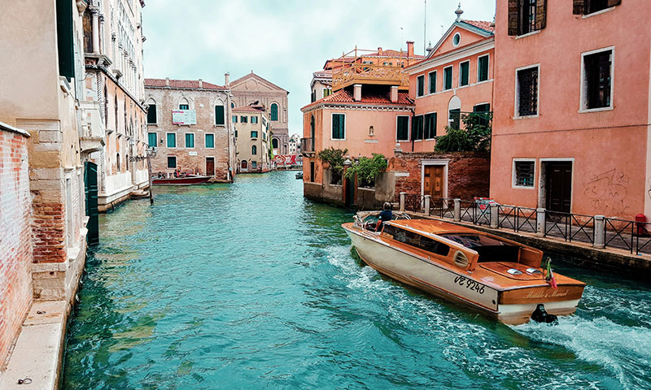

Reizen door Italië
Italië staat bekend om zijn rijke geschiedenis, heerlijke keuken en prachtige landschappen. Van de
gondels in Venetië tot
de ruïnes van Rome, elke stad heeft zijn eigen charme.

Ontdek de mooiste plekken van ons continent
Italië staat bekend om zijn rijke geschiedenis, heerlijke keuken en prachtige landschappen. Van de
gondels in Venetië tot
de ruïnes van Rome, elke stad heeft zijn eigen charme.


Van Parijs tot de Provence, een mix van cultuur en natuur.

Zon, zee en geschiedenis in overvloed op de Griekse eilanden.

Prachtige fjorden en natuur voor de echte avonturier.